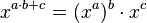

Szybki algorytm potęgowania
W poprzedniej części napisaliśmy dwie funkcje, które obliczały potęgę an.
W obu przypadkach funkcje potrzebowały wykonać n-1 mnożeń. W tej części lekcji zajmiemy się zmniejszeniem tej liczby mnożeń.
Na początek zapoznajmy się lub przypomnijmy sobie podstawowy fakt odnośnie potęgowania:

Pod spodem znajduję się kilka przykładów użycia tego wzoru:
-
a6 możemy zapisać jako (a3)2.
W tym przypadku możemy najpierw obliczyć a3 (dwa mnożenia),
a następnie wynik pomnożyć przez siebie (kolejne mnożenie). W sumie wykonując trzy mnożenia, a nie pięć.
-
a16 możemy zapisać jako (((a2)2)2)2.
Wówczas należy liczbę a podnieść do kwadratu, a następnie kolejne wyniki podnosić do kwadratu.
W ten sposób możemy wykonać tylko 4 mnożenia zamiast 15.
Wykorzystując powyższy fakt oraz dwa przykłady użycia, spróbuj zastanowić się nad szybkim algorytmie obliczającym potęgę.
Zadaniem jest wykonać dwie funkcje jedną rekurencją i drugą iteracyjną.
Oczywiście, jeśli powyższa informacja jest zbyt mała zawsze możesz skorzystać ze wskazówki.